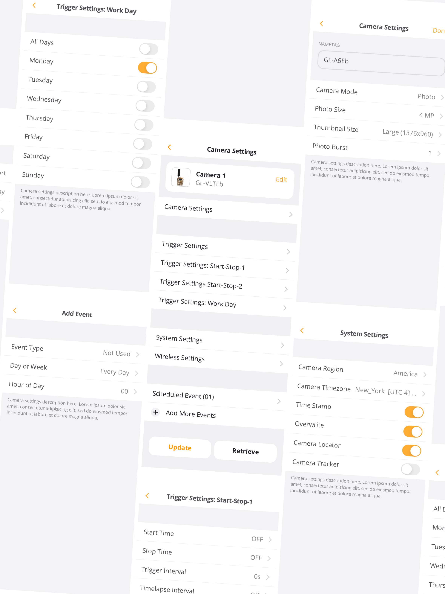
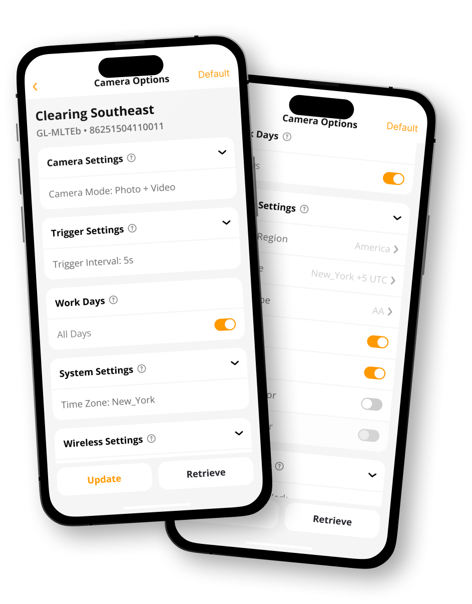
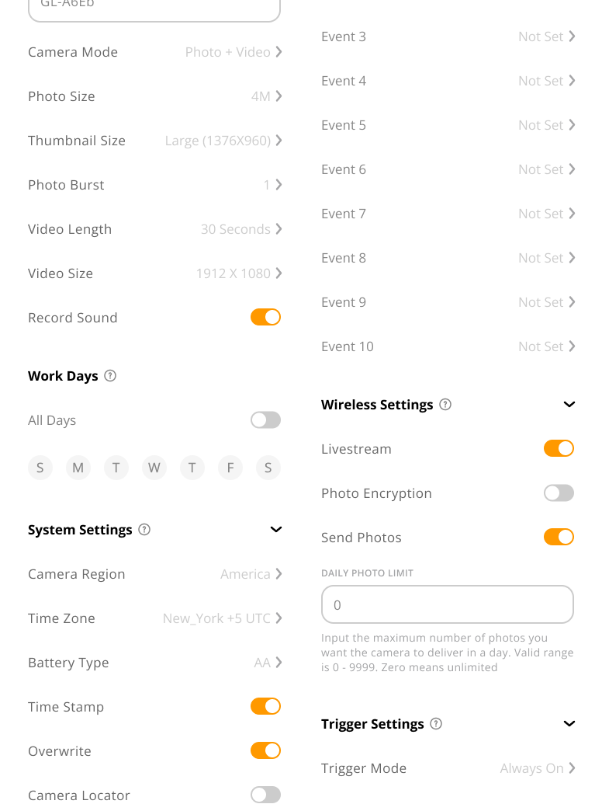
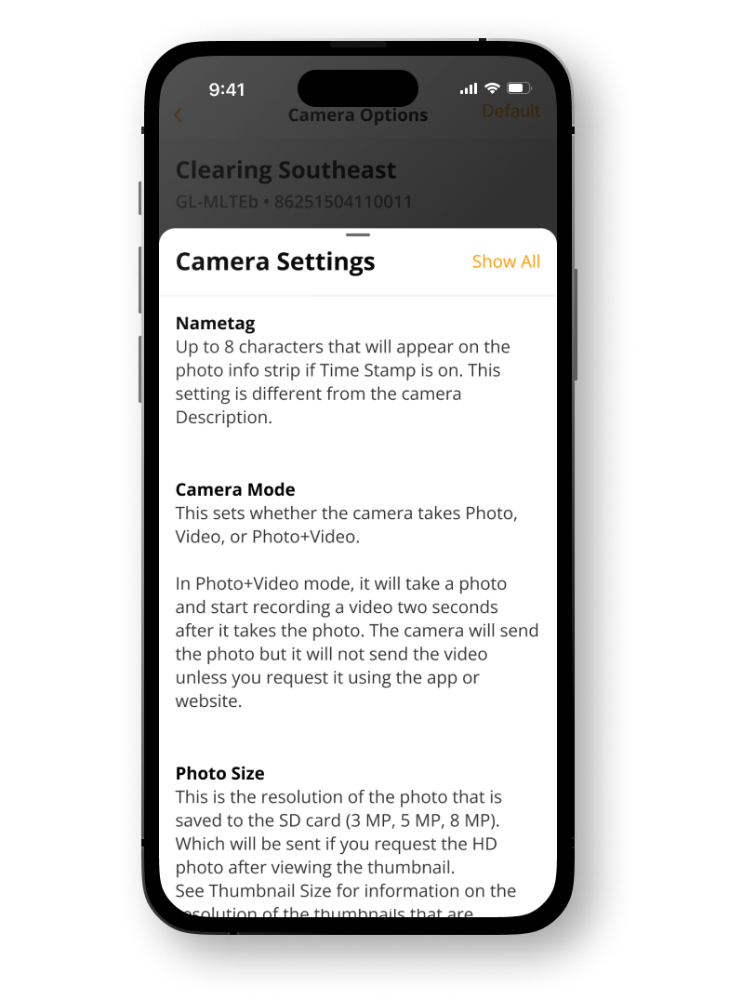
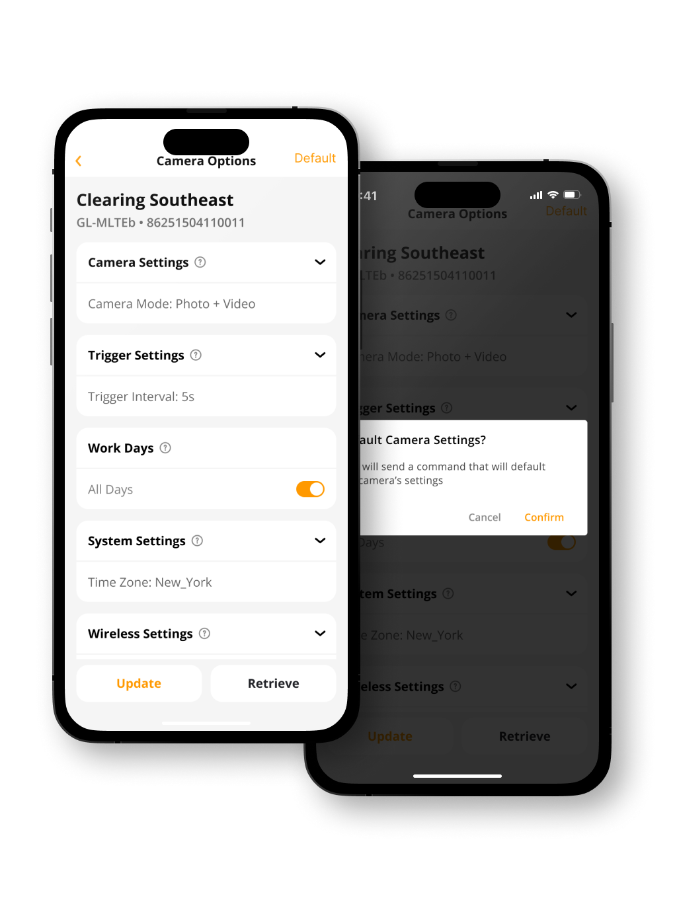

Spartan Camera
Camera Settings App Overhaul
Project Showcase Copyright © 2026
LAST UPDATED: Oct, 2026
AUTHOR: ⊹ Gabb ⊹
VERSION: 1.1
+++ Role +++
Product Designer
As the only designer at the company at the time, my job was to work directly with beta testers and developers to restructure the settings experience, improve navigation, document the changes, and prepare the workflow for release.
This was my first major project where I was pretty much responsible for the design, functionality, documentation, and communication between backend and mobile developers.
+++ Description +++
The camera settings page was one of the most heavily used parts of the app, but it was also one of the most frustrating.
One of the main reasons is because the original would bury everything within more menus, making it harder to find badsic information and even harder to understand what a setting would actually do.
I had one simple goal. Make the settings page less annoying.
[ 01 ] Settings Navigation

Basically, the main problem here was that the settings page was an endless menu of subpages.
Users were consstantly opening and closing menus just to find basic information, like if the camera was in 'Photo + Video' mode, or just 'Photo' mode.
It was a waste of time and caused a ton of confusion, since users would often forget what setting they had just changed by the time they got back to the main page.
+++ Solutions +++

The redesign replaced those nested pages with dropdowns that were closed by default. This immediately got rid of the massive wall of information users were initially presented with.
Instead, users could now see the most important settings at a glance and open only the specific category they wanted to change.
This made the page easier to scan and helped users keep track of what they were actually changing without having to dig through a bunch of subpages making the settings page siginificatntly easier to navigate and reduced the amount of information users had to retain at once.
[ 02 ] Context Menus

A lot of users struggled to understand how certain camera settings would behave before sending updates to the device.
Our trail cameras are pretty complex and built for a bunch of different use cases, from specific working schedules to setting daily “check-in” reports at particular times of day.
The frustrating part was that none of this information was particularly easy to find.
And at the time, the product didn't even have a user manual, so we were basically expecting users to either call support and spend an hour learning about the settings, or just figure it out through trial and error.
A terrible approach if the goal is a user friendly product.
+++ Solutions +++

To solve this, we added a brief description for each section explaining what the setting actually does.
The information appears as a slide-up card when the user wants to learn more, keeping the main settings page clean while still providing context when it's needed.

We also added a 'Default' button as a little escape hatch.
If everything goes wrong and the user just wants to get the camera working again, this instantly reverts the device to a reliable preset, making sure some weird combination of settings isn't preventing the camera from sending photos.
+++ Impact +++
Overall, this update introduced a lot of practical changes that I gathered directly from talking to our beta testers and working in support. It brought much-needed clarity to the app and made the troubleshooting stage significantly easier.